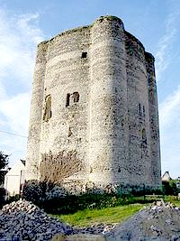
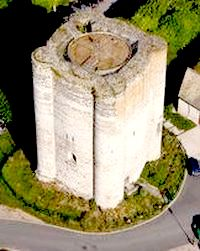
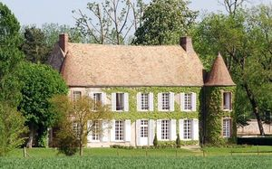

Recensement Jean-Claude Truffet



| Département | 78 — Yvelines |
| Canton | Bonnières-sur-Seine |
| Commune | Houdan |
| Type d'édifice | Château |
| Période d'origine | XII-XVI |
Deux châteaux dans cet article; Houdan et Maulette. HOUDAN, le domaine de Houdan faisait partie du territoire de la famille des Montfort, vivant à une douzaine de kilomètres dans leur château de Montfort l'Amaury. Une lettre de Simon III de Montfort, comte d'Evreux, situe la construction du château et des deux églises de Hosdench (Houdan) sous le règne de son père Amaury III qui vécut de 1101 à 1137. Ce qui permet de dater la construction du donjon à la fin du premier tiers du XIIe siècle. Il se présente sous la forme d'une tour cylindrique de 23 m de haut, à laquelle manque les créneaux (ceux-ci devaient probablement l'élever de 1 à 2 m supplémentaires). Les pierres furent utilisées pendant la Révolution française pour construire un autel de la liberté sur la place située devant la tour. D'un diamétre d'environ 15 m au niveau du sol la tour est flanquée aux 4 points cardinaux de tourelles semi-circulaires d'un diamètre de 4,80 m. L'épaisseur des murs décroît de 3 m au niveau du sol jusqu'à 2,40 m au sommet. En 1903, le donjon devient propriété de la ville de Houdan à la suite du legs de son dernier propriétaire privé, le docteur Aulet.
Éléments protégés MH : le donjon et ses quatre tourelles : classement par liste de 188.
HOUDAN, le donjon de Houdan est constitué d'une tour légèrement ovale de 16 m de diamètre environ et de 25 m de hauteur avec des murs épais de 3,50 m, flanquée de quatre tourelles-contreforts en saillie dans les angles de même hauteur et de 4,80 m de diamètre. Ce plan sera repris vers 1140 à Ambleny.La tour comprend trois niveaux : un rez-de-chaussée et deux étages. Les planchers intérieurs et la toiture ont disparu. Un escalier aménagé dans l'épaisseur d'un mur permet d'accéder à l'étage noble situé au premier niveau. Ce-dernier s'éclaire par des baies à banquettes latérales.La porte d'accès se situait à 6 m du niveau du sol et donnait accès à un entresol. MAULETTE, construction du XVIe siècle à un étage, flanquée de deux tourelles d'angle et dont les communs sont utilisés comme ferme. accolé à d'Houdan, la famille Petau a été anoblie en Petau de Maulette par Louis XV, c'est cette famille qui a fait construire le manoir qui se trouve en face de l'église. Elle posséda plusieurs châteaux dans la région : la Mormaire et la Couarde entre autres, puis habita Montfort l'Amaury, dont une rue porte le nom de Petau de Maulette. L'édifice se compose d'un corps principal de plan rectangulaire et de deux tours, le bâtiment comprend un rez de chaussée et un étage carré.
Houdan ; Famille des Montfort"
Deux châteaux dans cet article; Houdan grav 1-2 et Maulette grav 3. Houdan 48° 47' 22? N, 1° 35' 56? E